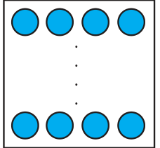
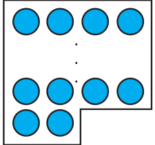
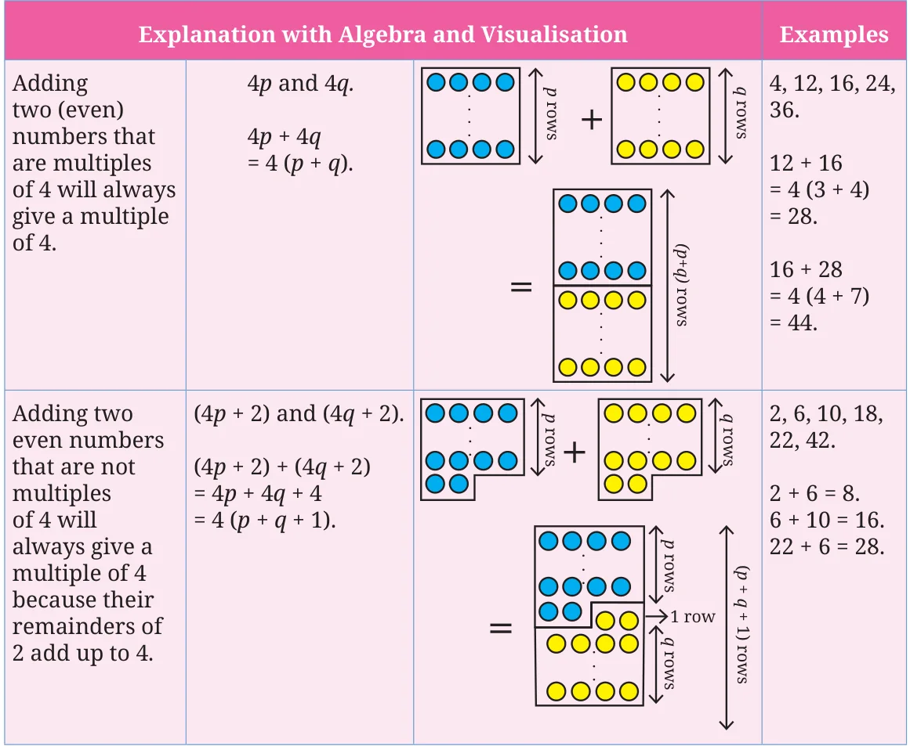
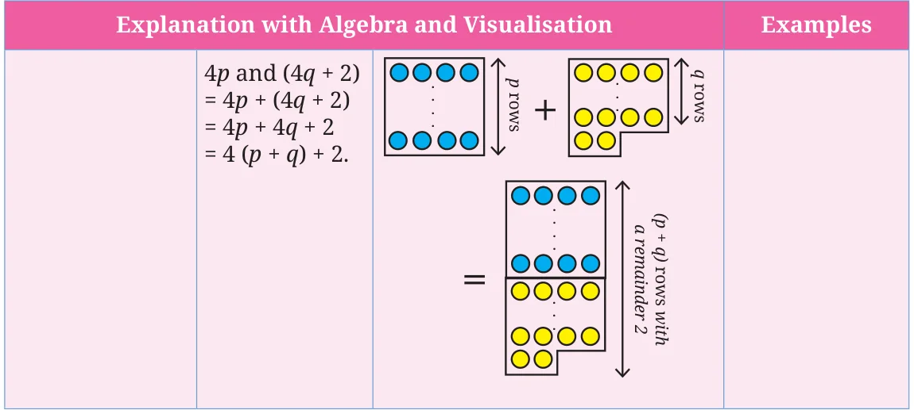

Take a pair of even numbers. Add them. Is the sum divisible by 4? Try this with different pairs of even numbers. When is the sum a multiple of 4, and when is it not? Is there a general rule or a pattern? Even numbers can be of two types based on the remainders they leave when divided by 4.


Even numbers that are multiples of 4 leave a remainder of 0 when divided by 4. Even numbers that are not multiples of 4 leave a remainder 2 when divided by 4.

When will two even numbers add up to give a multiple of 4? This problem is similar to the question of identifying when adding two numbers will result in an even number. Can you see this? There are three cases to examine:

What happens when we add a multiple of 4 to an even number that is not a multiple of 4? Is it similar to the case of the parity of the sum of an even and an odd number?
Look at the following expressions and the visualisation. Write the corresponding explanation and examples.


Notice how we are able to generalise and prove properties of arithmetic using algebra and also using visualisation.